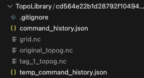
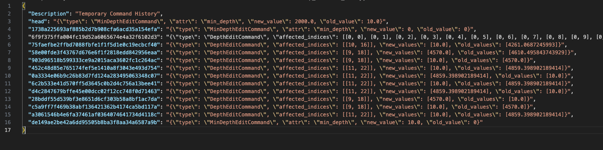
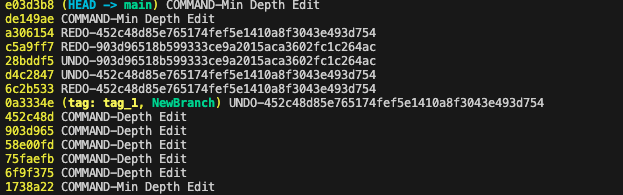

Topo & The Widgets!
This document explains the widget modules in mom6_forge.
mom6_forge comes with three UI modules/classes that wrap the three main
classes—VGrid, Grid, and Topo—to help with creating vertical grids
(VGridCreator), horizontal grids (GridCreator), and editing topography
(TopoEditor).
Creators
The creators act as visual wrappers around the constructors of their respective
classes, providing sliders and visualizations. They automatically generate
folders called VgridLibrary and GridLibrary to store created grids.
The currently selected grid is directly accessible as an object inside each
creator.
GridCreator
GridCreator is a split-panel widget: a control panel on the left and an
interactive cartopy map on the right. It supports three creation modes,
selected via radio buttons before any grid is defined.
Lat/Lon Corners
Click two diagonal corners on the map. A uniform-degree Grid is created
from the bounding box. After creation, five degree sliders appear
(xstart, ystart, lenx, leny, resolution) for live
adjustment.
From Center
Set the domain width (km), height (km), resolution (km), and a clockwise
rotation angle (degrees from north) in the input fields, then click the
domain centre on the map. This calls Grid.from_center(), which builds a
rotated rectangular grid using an azimuthal equidistant projection centred at
the clicked point. This mode is particularly useful for aligning a domain
with a coastline or estuary.
From Projection
Set a CRS (chosen from a preset dropdown or typed as any EPSG string) and
resolution (km), then click two corners on the map. This calls
Grid.from_projection().
When a preset CRS is selected the map axes switches to the matching native cartopy projection so that clicks deliver coordinates in that projection’s metres directly — no additional transformation is needed, and domains near or over the poles work correctly. Supported presets:
Preset |
Cartopy projection |
Default view |
|---|---|---|
EPSG:4326 (Plate Carrée) |
PlateCarree (no switch) |
Global |
EPSG:3995 (Arctic Polar Stereographic) |
NorthPolarStereo |
45–90°N |
EPSG:3031 (Antarctic Polar Stereographic) |
SouthPolarStereo |
90–45°S |
EPSG:5070 (CONUS Albers Equal Area) |
AlbersEqualArea |
CONUS |
Any other EPSG string |
PlateCarree (fallback) |
CRS area-of-use (via pyproj) |
Editing projected grids
After a projected grid (From Center or From Projection) is created or loaded, the control panel shows the same parameter inputs pre-filled with the current values alongside a Recreate Grid button. Adjust the inputs and click Recreate to rebuild the grid without needing to re-click the map.
GridLibrary
Grids are saved as MOM6 supergrid NetCDF files under <repo_root>/GridLibrary/
(naming convention: grid_<name>.nc). The directory is created automatically
and a blanket .gitignore is written into it so saved grids are not
accidentally committed.
On Load, all creation parameters are restored from the file’s metadata, so the Recreate button works immediately after loading a projected grid without any additional clicks.
Topo & TopoEditor Edits
The Topo & TopoEditor workflow is a bit more nuanced.
Grids are simple: they are created once and rarely modified. Topo objects,
however, are built on top of the horizontal grid and are heavily edited during
the development cycle (filling bays, deepening ridges, etc.).
Because of this, Topo has many editing functions. TopoEditor provides a
visual, point-and-click interface on top of these functions.
Current editing functions (* = available in TopoEditor):
*Edit depth at a specific point*Edit the minimum depth*Erase a basin at a selected point*Erase every basin except the one containing the selected pointGenerate and apply an ocean mask from a land-fraction dataset
Apply a ridge to the bathymetry
You can also reapply an initializer (none supported in the TopoEditor):
Set flat bathy
Set spoon bathy
Set bowl bathy
Set from dataset
Set from previous topo object
Undo & Redo
To support the iterative editing process, we provide undo and redo
functionality across sessions. This requires maintaining a structured history,
stored inside a directory associated with your Topo object.
This folder contains:
The grid underlying the topo
The original blank topo
A permanent command history
{kind=link}

Layout of a Topo folder.
{kind=link}

Structure of the command history JSON file.
How It Works
You create your
Topoobject, which initializes the four files above.You make changes using
TopoorTopoEditor.Each change is added to history.
Each change is then committed via Git—this powers undo/redo.
Topo Git Functionality and How to Use It
We use Git to implement undo/redo functionality inside the topo directory.
You can view the history with:
git log
The command history is a JSON file mapping commit SHAs to change metadata. You can cross-reference the Git log with this JSON file to inspect details of each edit.
We also support simple version-control actions:
topo.tcm.create_branch("branchname")— create a branchtopo.tcm.checkout("branchname")— switch branchestopo.tcm.tag("tagname")— create a tag and save atagname_topog.ncfile
Tags cannot be checked out (this can cause unexpected states).
Undo and redo:
topo.tcm.undo()topo.tcm.redo()
These appear in the Git log as:
UNDO-<sha>REDO-<sha>
Be careful not to undo your initial set-function!
Warning
Do not run Git commands inside this folder except for harmless commands like git log.
We manage the folder internally. External Git commands (like git checkout)
may break state management.
{kind=link}

Example git log for a topo editing session.
Nuances (Initialization, Naming, etc.)
Folders are named after the hash of the grid’s tlon variable.
This means that any topo using the same grid will share the same folder.
You can initialize Topo in three ways:
Topo()— creates an empty topo with the provided minimum depthTopo.from_version_control(path)— loads a folder, applies saved history, and returns the reconstructed topoTopo.from_topo_file(file)— loads a topo file and applies it on top of any existing changes in the folder
All of the git versioning (undo, redo, reset, checkout, tag, create branch) is handled by the TopoCommandManager, which can be accessed as the class variable “tcm”. The code for this manager resides in the command_manager class. We would use straight git functions, but the topo file itself is handled independently of the commits. (In the future, expect this to use icechunk)
See also the demonstration notebook: